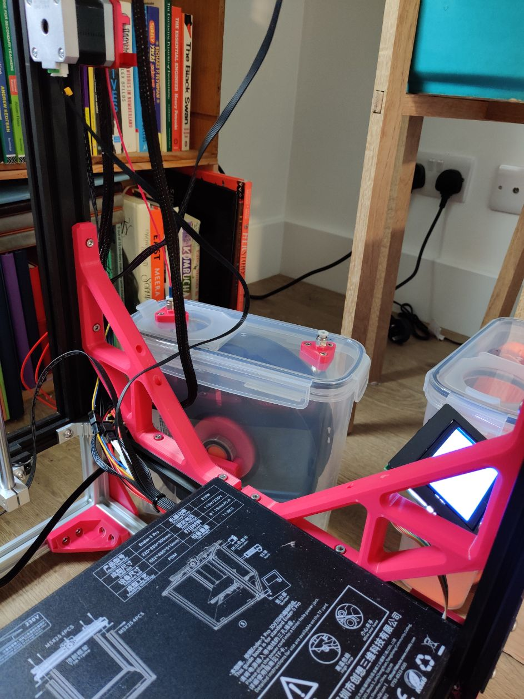
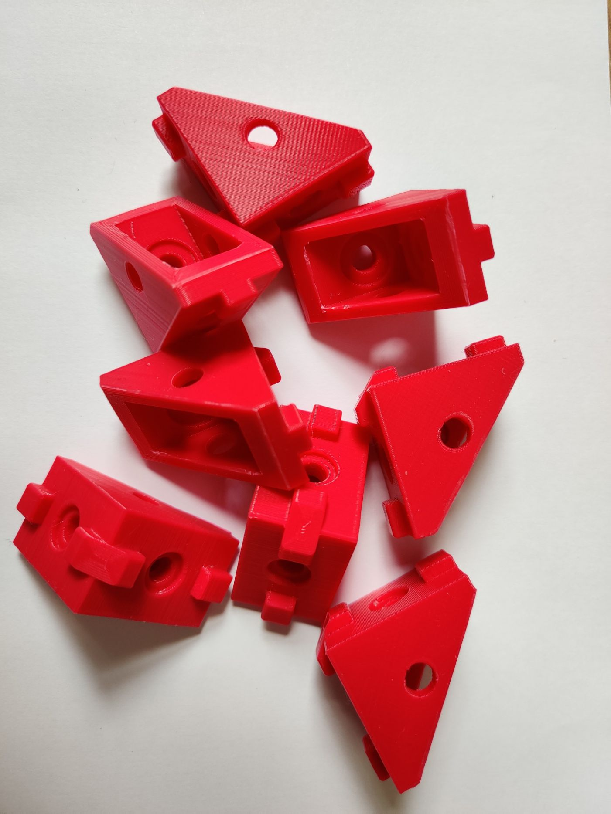
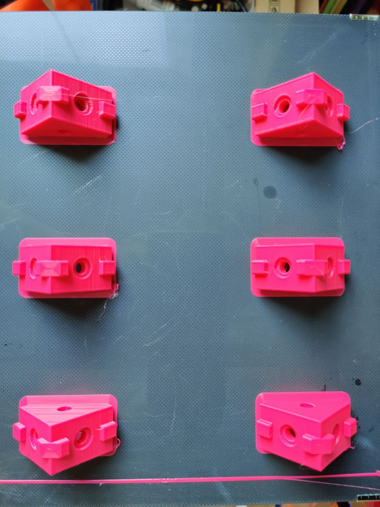
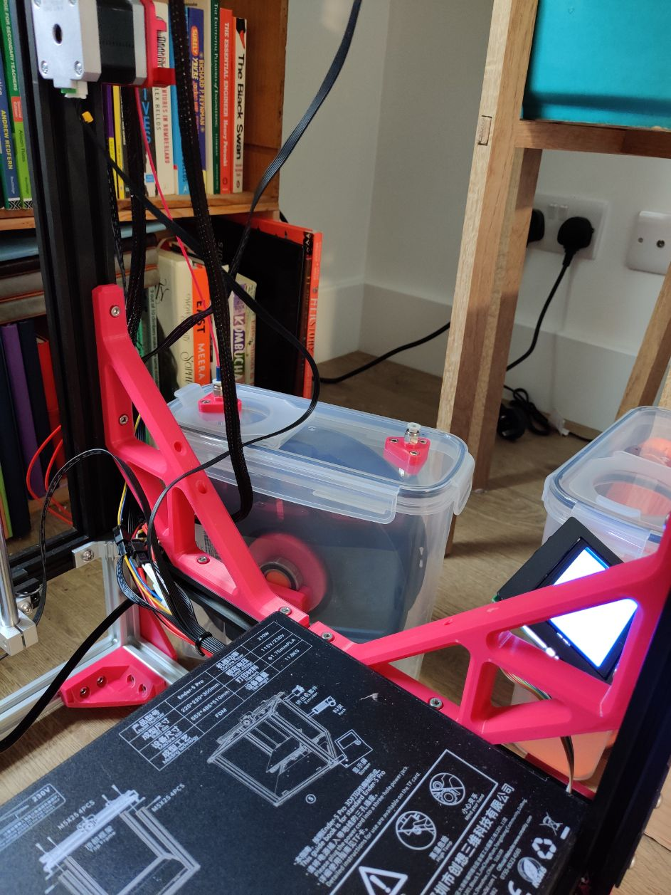
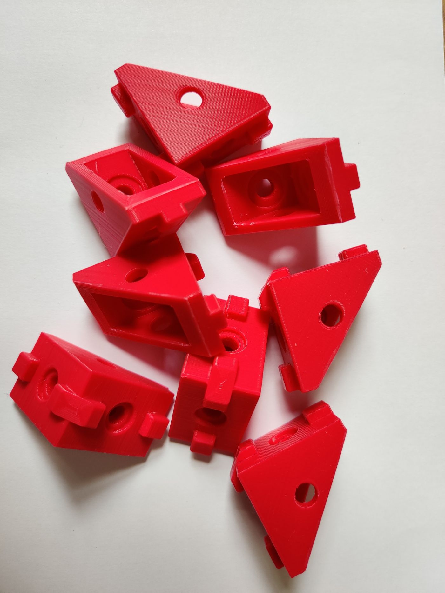
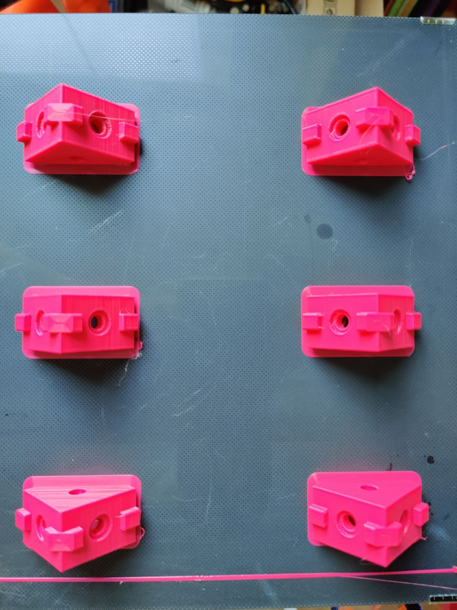

Mods for the Creality Ender 5 Pro
My Designs
Mods that I have designed, modelled and (possibly) published
I was having stringing and clogging issues (which I later discovered were nothing to do with my retraction settings, so this mod, whilst cool, is possibly not necessary) so decided to top mount my extruder to significantly reduce the bowden tube length. There is one solution on thingiverse, however it has two main issues: some people reported problems with overheating (and hence skipping) of the stepper, as it is usually fixed to the aluminium frame which can act as a heat sink; secondly, when the print head is homed, the bowden tube has a very small radius, possible leading to filament feeding issues. I designed my own mount which incorporates a short piece of 2060 extrusion to fix the overheating issues, and mounts centrally on the top-rear frame, angled upwards, to minimise both length and movement of the bowden tube. I have also incorporated cable management for the main cable runs. My e-stepper wire was just too short to reach in the standard configuration, but this was fixed with the electronics box relocation mod.

It is commonly accepted that keeping filament dry prolongs its working life. Left unattended it absorbs moisture from the air which boils in the hotend when printing causing extrusion or adhesion issues. If your filament is 'wet' you can put in in the oven at a low temperature for a while to dry it out again, but keeping it dry in the first place is useful. There are hundreds of designs, lots of which do specify the box they use, but as usual none are ever quite right (or the ones that are don't specify the box). I therefore designed my own, based around this cereal box.
The 350W PSU that came with my Ender 5 was not MeanWell, and did not inspire confidence (although I'm sure it would have kept working fine), and was noisy. I decided to replace it with a passively cooled unit, eliminating one of the fans from the system. I also took the opportunity to increase the capacity to 600W (I know, completely overkill) as I have future mods planned which will require more power. Since it is passively cooled it has to be mounted externally, so I designed and printed some covers to house the wiring, switch and power socket. I wired everything up with 14AWG wire, including new runs to the printers mainboard, using crimped quick-disconnect (plug and switch), ring (PSU terminals) and ferrule (mainboard terminals) connectors for strength and durability. I chose the MeanWell HEP-600-24; definitely overkill, but since it is only passively cooled I didn't want it to get anywhere near its power limit.


content
Nothing was quite right. There was no good way to route the wires to the mainboard through the original electronics enclosure, no neat way to hide power cables, no easy way to access connections for maintenance, poor expandability. It all had to go.
I replaced the PSU cover and original enclosure with a clear polycarbonate panel to mount everything to, providing better visibility and unlimited cable routing options. I also designed a patch panel to allow for quick-disconnects of components without touching connections on the mainboard. To house everything I extended the rear, and bottom, of the original frame by 50mm and mounted a hinged door to close it all up. I'm currently designing the last few cover panels to house the fused power switch, cooling fans, and to seal it all up.
content
Community Designs
Mods created by the community that are (often) essential to the Ender 5
A remix of the original super-strut by DrieStone which, in additional to purely holding up the bed like an additional cantiliver, braces diagonally from the bed to the linear bearings to provide what I think to be the stiffest bed support for the Ender 5. Although even without them look at the first layer quality of this printer.
Both large and small, corner brackets help to stiffen the overall structure of the printer, ensuring walls are smooth and layers are consistent.
 





Mostly aesthetic, but it does give you better nozzle visibility for when you're levelling the bed. There are many to choose from, and this version looked simple and still strong so is what I chose. Initially I picked this as it's slightly prettier, however I couldn't find the link when I neeeded to print it and I've ended up very happy with the current solution. A quick search on Thingiverse will give you all the options.

This mod provides much more flexibility for mounting and changing other components, and gives access to the electronics enclosure without having to tip over the printer. It is accomplished simply by printing four of these brackets.

Whilst I did install this before doing my triple z-axis upgrade, I didn't actually use it for anything other than z-homing as the Creality glass bed I use it almost perfectly flat. I used this great mount to attach it to my stock Ender 5 hotend.
content
content
content